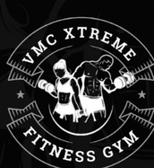
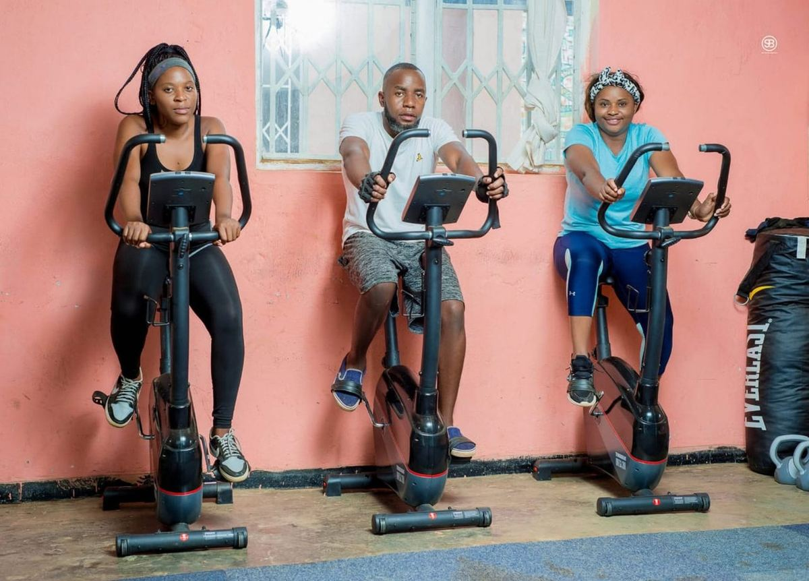

Personal Training
Focused coaching built around your individual goal.

VMC XTREMEVMC XTREME FITNESS · LILONGWE
100% goal-focused training. Two daily sessions. Six days every week. Built for people who are serious about their progress.
THIS IS VMC
Whether you are starting from zero, building strength, improving your conditioning or working toward weight loss, VMC gives you a place to show up and work.
No complicated membership language. Choose your duration, choose your training mode and keep moving.
TRAINING AT VMC
Focused coaching built around your individual goal.
Conditioning that develops stamina and performance.
Progressive training for strength and physique development.
Consistent training to support sustainable progress.
Train with others, stay accountable and keep moving.
A clear starting point for members new to structured training.
INSIDE VMC
Real VMC gym photography — the equipment, sessions and people that make the space yours.



MEMBERSHIP
Single
Double · K3,000Single
Double · K10,000POPULAR DURATIONSingle
Double · K35,000Choose your training mode and duration during registration. Your membership is activated after VMC verifies payment.
COME TRAIN
Chilinde 1, Sankhawekha, Lilongwe, Malawi
Monday–Saturday · 05:00–09:00 and 15:00–20:00
+265 991 203 382Become a VMC memberVMC ACCESS
MEMBERS
Membership, payments, attendance, profile, gallery, notifications and your VMC journey.
Member sign in →AUTHORISED TEAM
A private operational workspace for VMC staff, managers and owners.
Management sign in →VMC GYM RULES
These simple standards help keep the gym safe, clean, welcoming and productive for every member.
Wear appropriate workout clothes and closed-toe athletic shoes.
Wipe down equipment after use with the provided disinfectant.
Return dumbbells, plates, and other equipment to their proper places.
Share equipment and avoid occupying a machine during long rest periods.
Follow time limits on cardio machines during busy hours, if the gym has them.
Use equipment as instructed to reduce the risk of injury.
Avoid dropping weights unless the equipment and area are designed for it.
Keep your phone use brief and avoid loud conversations or speakerphone.
Bring a towel and maintain good personal hygiene.
Stay hydrated by bringing a water bottle.
Respect other members' personal space and privacy.
Ask before giving advice or interrupting someone else's workout.
Report damaged equipment or unsafe conditions to staff.
Follow the gym's policies on food, photography, and guest access.
Be courteous to staff and other gym members.